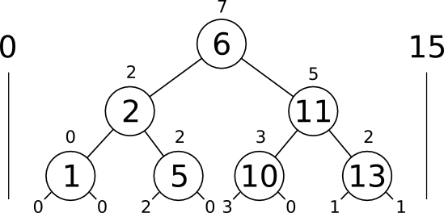
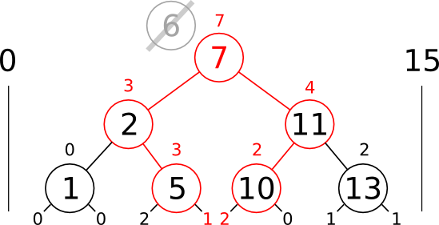

Being able to produce unique identifiers is important for many application. Currently known approaches are inadequate in many situations where efficient use of key space and guarantee of uniqueness are required. To make matters worse, uniqueness is often mistaken to be synonymous with randomness, which is simply not true. In this paper we will give a precise definition of uniqueness and develop an extension to binary tree and skip list data structures to support one more additional operation for automatic insertion into available gaps between elements of a set. The presented algorithm is simple to implement and will retain all the performance characteristics and properties of original data structures it's based on. In particular the \(O(log n)\) complexity of search and insertion is preserved. Software developers already familiar with basic data structures will find this technique to be a powerful addition to their arsenal.
Occasionally on the technically minded side of the Internet a question comes up, "How do I generate a unique key/number/identifier in my favorite programming language". And the usual advice on the topic varies from using a global counter variable(and turning your program into a ticking bomb in best traditions of millennium bug programmers) to slightly saner approach, using UUID - a gigantic 128-bit number that could as well be used to count every atom of an Earth-sized planet. Neither approach is ideal, especially for applications that create and destroy many objects quickly, where a static counter may run out of range way too quickly. Using large numbers for identifiers is part of a solution, but computers can only work efficiently with numbers of finite sizes, and so the question remains open. Is there a better way?
On the other hand efficient search data structures were never in short supply, and they play an important role in optimizing countless real world applications, even those that may not appear as search problems at first glance. It's an accepted fact of life, that if a problem can be reduced to a search in ordered set, it's almost certain it can be done fast with a binary tree or similar data structure. Search for a unique key is one of those problems.
The method presented here, may not be a silver bullet yet, but it might benefit those applications already relying on symbol tables, and more over it reveals an interesting direction that might be worth exploring further in other contexts.
Before we introduce the actual algorithm for finding unique keys, let's define the problem and it's solution in abstract terms. Most of the terminology here is based on basic set theory.
Let set \(S\) be a set of all valid keys. This set need not be defined explicitly, it's much more compact and useful to define it as an interval between some \(Minimum\) and \(Maximum\). \[S = (Minimum, Maximum)\] Then lets suppose we marked some keys to have certain property, for instance property of being used. Let's define subset \(K\) of \(S\) to be the set of all keys possessing that property. \[K= \{ x\in S\,|\,P(x)\} \] \[K \subseteq S \] Then the set \(K'\) of all keys not possessing the property, naturally, is complementary to \(K\) and is also a subset. \[K'= \{ x\in S\,|\, \neg \, P(x)\} \] \[K'=S \setminus K; \, K \subseteq S \]
If we define a unique key, as any key that's not used, then set \(K'\) is a set of all unique keys. If that definition is accepted to be true, then all it takes to produce a unique key, is to find any element of the complementary set \(K'\) and possibly move it into the set \(K\), in the event if we wanted to mark it as not being unique anymore.
This whole operation can be abstractly defined as a function that transfers elements one at a time between two complementary portions \(X\) and \( (U \setminus X) \) of some set \(U\). \[ f:(X,U) \rightarrow (Y, y)\] \[Where\, y \in Y \wedge y \in (U \setminus X) \wedge X \in Y \in U\] IF complementary set is not empty! Such function produces a new set \(Y\) containing one more element \(y\), that was previously in the complementary set. We will be referring to this function as complementary transfer function.
If all the sets are defined as ordered, then we can say that set \(K\) partitions set \(S\) into a set of gaps \(G\). A union of all gaps is equivalent to the complementary set \(K'\). \[\bigcup _{ \,X\, \in \, G }{ X } = \,K'\] Formally speaking \(G\) is an instance of a set partition of \(K'\).
A more rigorous definition of set G would be awkward and wouldn't provide much in terms of insight. The intuitive image is to think of slicing the interval \((Minimum, Maximum)\) by every element of \(K\) — the resulting set of intervals would be the set of gaps \(G\).
In this way we defined the complementary set \(K'\) in terms of slices of interval \((Minimum, Maximum)\) representing set \(S\), or in terms of gaps. That means all unique keys can be found in gaps between elements of a set \(K\).
All the definitions above would be useless if there was no way to actually find a gap. In this section we will derive an algorithm that can be used to efficiently search for those gaps. We will start by considering the obvious approach first and explain why it wouldn't work, then move on to a more practical solution.
A binary tree is a search-efficient representation of a totally ordered set. A balanced binary tree guarantees worst case time of search to be \( O \left( log {\,N} \right) \). Three most basic operations on binary trees are: search, insert and remove. The simplest of them all is search. Removing and inserting is more difficult, because it can potentially produce an unbalanced tree, and special measures are required to counteract or minimize chances of this happening. Even though more difficult, insertion and removal can be done in logarithmic time.
A standard insertion function in a binary tree, first, performs a search for a key, if it finds the key it leaves the tree unchanged, otherwise it creates a new node at the place where key was supposed to be found and performs balancing restructuring if necessary.
In order to implement the complementary transfer function with a binary tree all we have to do, is take the standard insertion function as basis and replace the search criteria for key with search criteria for any non-empty gaps. With the exception of an additional parameter — the interval defining set \(S\), everything else can be left the same. Complementary transfer function is simply gap insertion.
As an example consider a hypothetical tree, where number of gaps is available at each node in constant time: \[N\, =\, \{ \,1,\,2,\,5,\,6,\,10,\,11,\,13\,\} \] \[S = (0, 15)\] 
Figure 1: Gap-augmented tree
Search for gap in such tree is trivial, and can be accomplished by recursively following any tree branch that has gaps, until encountering an empty link. Insertion can than proceed as normal, by creating a new node.
Augmenting tree nodes is common technique that allows storing values in tree nodes in order to make them accessible in constant time later. It's easy enough to compute in advance any attribute you might want to associate with a node, especially if performance is not an issue or if updating is not required. Our use case of binary trees unfortunately falls in neither of those categories, and more care must be taken of what can be stored at the nodes.
Updating augmented values can be done efficiently only for values that depend on the node itself and immediate values of it's child nodes. Such values propagate upward from the source of change, but never below. Since every node can only have one parent, that means any change will only have to propagate upward through single path in a tree, preserving the \( O \left( log {\,N} \right) \) complexity. A good example of upward-propagating value(and a one we will need later) is size: \[ Node.Size = Node.Left.Size + 1 + Node.Right.Size \] Tree size is usually straightforward to update during insertion and removing.
On the other hand, values that may be affected by parent nodes cannot be updated efficiently, because every node has two children, doubling the amount of updates that have to be done for each node passed. In worst case, entire tree would have to be updated, destroying any guarantee of logarithmic time. Such values propagate downwards or even both ways. Gap counts happen to be propagating in this manner.
Consider what happens with gaps when changing a value of a node at the top, a common occurrence that might happen during balancing or removing. All the binary tree invariants are still preserved and if no gap information was stored we could safely stop at this point without violating integrity of the data structure. The gaps however did not preserve and need updating!
Figure 2: Difficulty of updating gap-augmented tree
Pictured above is the result of replacing node \(6\) with node \(7\). All the paths and nodes that had to be updated are marked in red. Clearly counting gaps explicitly, like we count nodes in a size-augmented tree, is not a good approach in this situation. This particular case was lucky to get \( O \left( 2log {\,N} \right) \) complexity, since update propagates down to only two paths. Still any real balancing algorithm would cause havoc to such tree. Not only it would be leaking performance everywhere it matters, but it would also be insanely difficult to implement.
Fortunately, there's another way to deduce number of gaps in each subtree, based on binary tree invariants, that doesn't involve explicit counting. Those two important invariants are:
It may not be immediately obvious, but these two invariants can be generalized to make assertions on entire subtrees:
This fact allows us to define bounding interval \(S\) recursively for each subtree. If you've been waiting for the punchline, this is it.
Let \(y\) be the value of node \(Y\) and \(S_{y} = (Min, Max)\) be a bounding interval defining valid potential keys of subtree beginning at node \(Y\), then following two rules can be observed:
We will be referring to the above rules as boundary propagation rules, they allow us to construct set boundary \(S\) at each node, given we know boundary of it's parent.
Our abstract gap search algorithm relied on the fact that gap count is accessible at each node in constant time. Following from previous definitions, gap count is simply the cardinality(set size) of complementary set \(K'\), the set difference. \[\left| K' \right| = \left| \, S \setminus K \, \right| \]
Cardinality of set difference is also, intuitively, same as difference of cardinalities. Making it possible to deduce cardinality of complementary set \(K'\) from cardinalities of sets \(S\) and \(K\): \[\left| K' \right| = \left| \, S \, \right| - \left| \, K \, \right| \]
The last statement can be more intuitively thought of as a difference between number of nodes tree can potentially have and number of nodes it actually has. That difference is the total number of gaps in a subtree:
Number Of Gaps = Potential Size - Actual Size